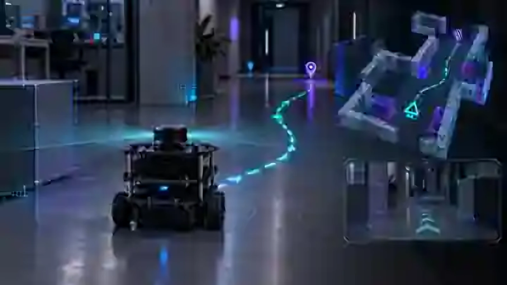
Illustrative visualizationMobile robotics
TurtleBot3 Autonomous Navigation
Mapping, localization and autonomous waypoint navigation.
Completed Academic Robotics Project
Robotics Software Engineer
I connect sensing, planning and control with the software that makes a robot work. My focus: ROS2 navigation, robot manipulation and dependable embedded Linux.
M.Sc. Automation & Robotics · TU Dortmund
Dortmund, Germany · Python · C++ · ROS2
13 projects across autonomy, manipulation, embedded systems and AI.
Recommended starting points appear first. Explore each project without losing your place.
13 projects

Illustrative visualizationMapping, localization and autonomous waypoint navigation.
Completed Academic Robotics Project
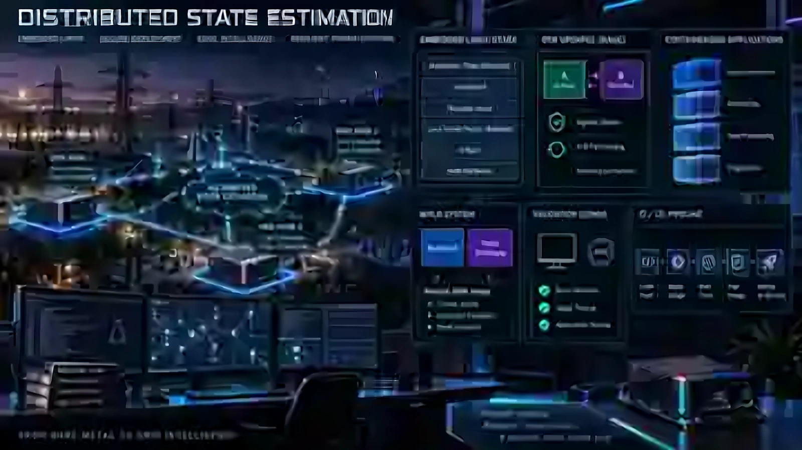
Illustrative visualizationEmbedded Linux, signed updates and recoverable deployment.
TU Dortmund Research Project
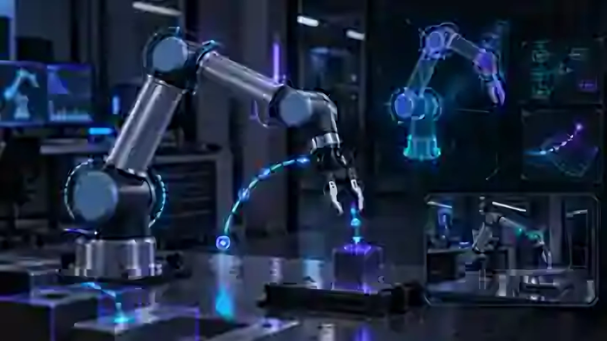
Illustrative visualizationKinematics, controller integration and trajectory execution.
Completed Academic Robotics Project
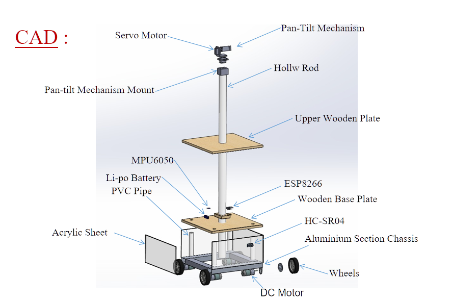
Project design illustrationROS mapping, localization and Arduino drive integration.
Completed Robotics Project
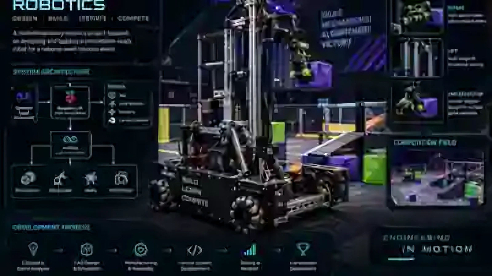
Illustrative visualizationOperator controls and embedded robot actuation.
Completed Team Robotics Work
 Project photograph
Project photographGPS/IMU estimation and waypoint control.
Completed Autonomous Vehicle Project
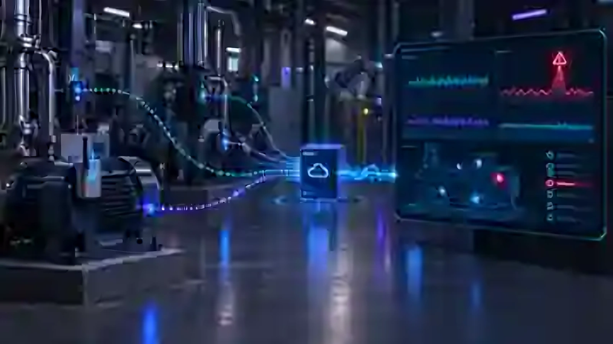
Illustrative visualizationAnomaly prediction from synthetic industrial telemetry.
Completed Industrial AI Project
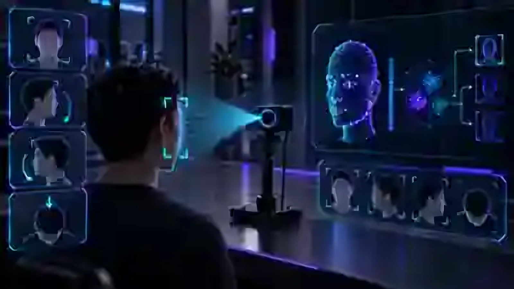
Illustrative visualizationGuided enrollment and local face inference.
Completed Computer Vision Project
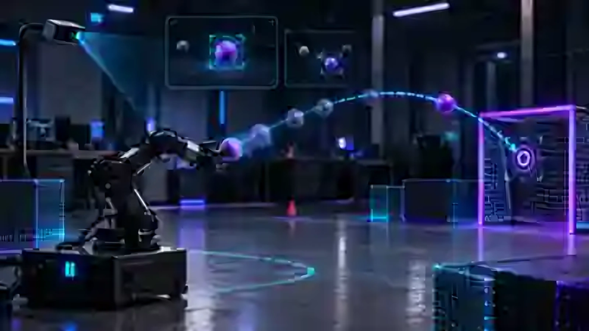
Illustrative visualizationCamera tracking connected to robot-arm execution.
3rd Place · October 2025
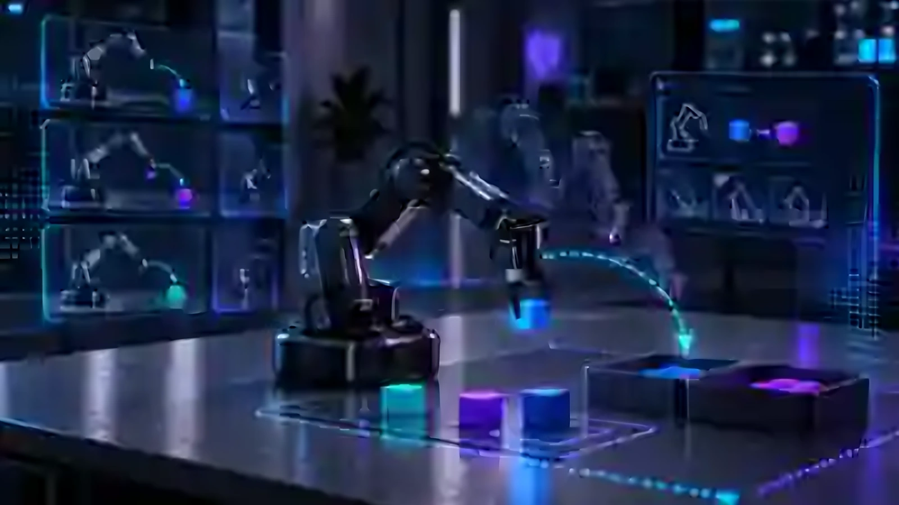
Illustrative visualizationA controlled study of robot-learning methods.
In Development
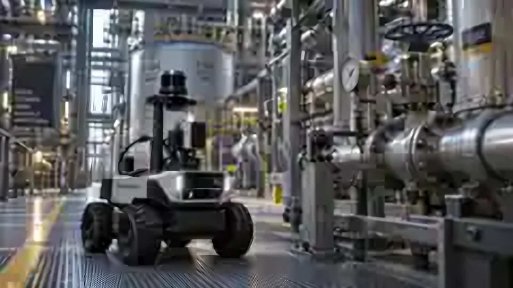
Illustrative visualizationInspection patrol simulation and evidence capture.
Simulation project · Public release September 2026
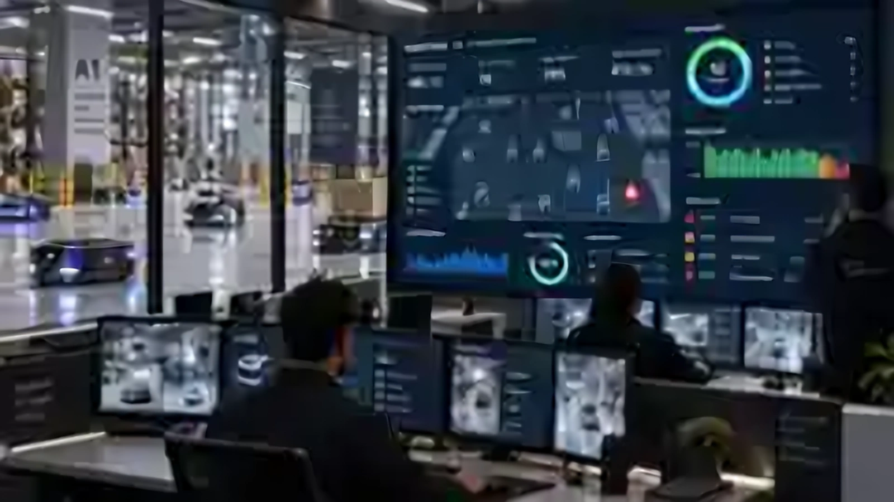
Illustrative visualizationFleet telemetry and tenant-aware operator views.
Development platform · Public release September 2026
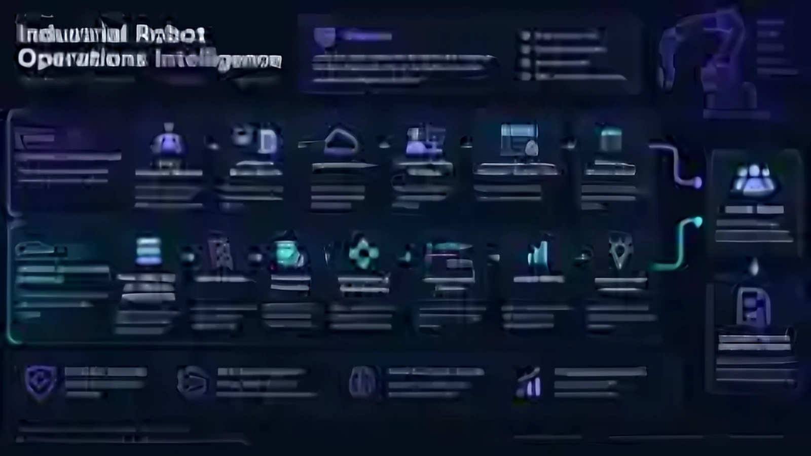
Illustrative visualizationEvidence-linked findings and incident diagnostics.
Integration capstone · Public release September 2026
GETracing Dortmund e.V.
Localization robustness, sensor uncertainty and map consistency. Reproducible ROS debugging through TF analysis, recorded data and systematic fault isolation.
Research project · ie³, TU Dortmund
Built the operating-system and remote-update layer for a constrained ARM state-estimation platform: Yocto, RAUC A/B updates, rollback, containerd and repeatable CI builds.
Explore the work ↗Johnson & Johnson MedTech · Forage
Virtual job simulation: reviewed Python control code, investigated command-response delays, iterated on changes, retested and documented the findings. Not employment at Johnson & Johnson.
Explore the work ↗GeeksforGeeks
Built Python data workflows, regression and classification experiments, cross-validation and automation tooling.
Omsara Industries
Assembled and tested 50+ PCBs, debugged electronics and checked I2C/SPI interfaces with laboratory instrumentation.
Ashlesh Bright Bars Pvt. Ltd.
Supported calibration, maintenance, process documentation and manufacturing improvement work.
I’m Samarth Patel, an M.Sc. Automation & Robotics student at TU Dortmund. I build robotics software across navigation, manipulation, perception and embedded Linux.
Based in Dortmund, Germany. English C1 · German A2 · Hindi · Gujarati.
Education and background ↗ROS2 · Nav2 · SLAM · AMCL · TF2
Mapping, localization and autonomous waypoint execution, from simulation to physical robot integration.
FK / IK · DLS · Trajectories · ROS
Connecting kinematic models, coordinate frames and controller interfaces to deliberate robot motion.
Yocto · Buildroot · RAUC · CI/CD
Reproducible Linux platforms, recoverable updates and deployment under real hardware constraints.
OpenCV · InsightFace · ONNX · Sensing
Camera pipelines, local inference and sensor observations that support reliable downstream decisions.
MQTT · FastAPI · Telemetry · Diagnostics
Anomaly alerts, fleet visibility and evidence-linked incident analysis in documented prototypes.
PID · Kalman filtering · State estimation
Reasoning about noisy measurements and connecting state estimates to controllable motion.
Robotics software, autonomous systems and the engineering that connects them.